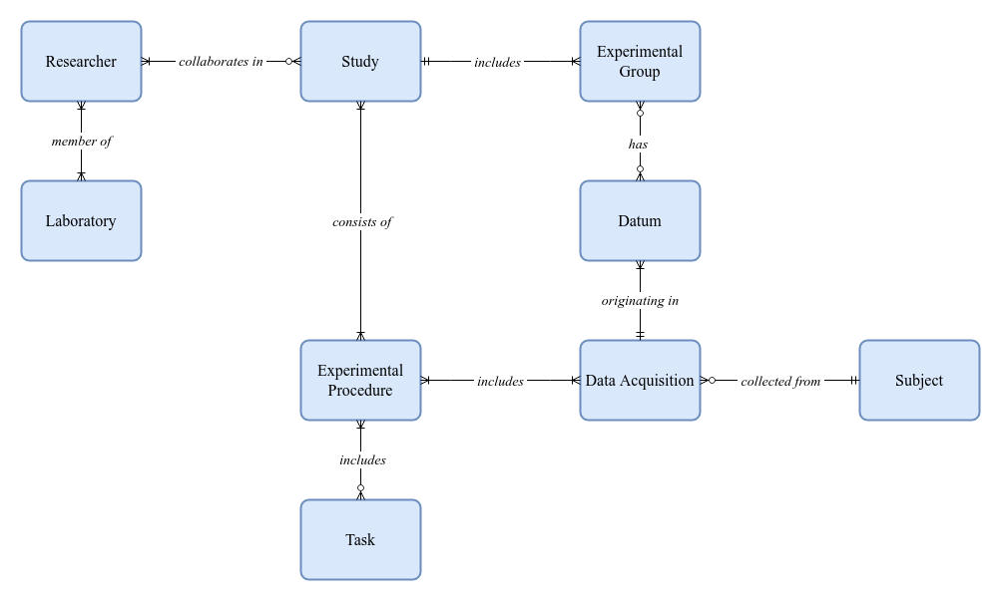

Introduction
Contents
4.1.1. Introduction¶
Working with a large and diverse neuroimaging dataset is a challenging task not particular to this thesis [Horien et al., 2021, Borghi and Gulick, 2018]. The following section will provide a quick overview of existing public datasets and explore how they are shared and what tools are most commonly utilized by researchers to use them to produce scientific findings.
4.1.1.1. Public Large-scale Neuroimaging Datasets¶
Centralized data collection and distribution efforts are key to the advancement of neuroscientific research [Milham et al., 2018, Laird, 2021, Van Horn and Toga, 2009]. Larger publicly available samples enable the detection and study of phenomena with smaller effect sizes more rapidly, by more people, and with more confidence [Laird, 2021, Smith and Nichols, 2018, Madan, 2021]. Data sharing enhances the reporoducibility of findings, reduces time and costs for new research, promotes transparency, and encourages collaboration across fields [Milham et al., 2018, Mar et al., 2013, Poldrack and Gorgolewski, 2014, Madan, 2017]. In recent years, such public datsets have become more numerous and increasingly accessible [Horien et al., 2021, Borghi and Gulick, 2018, Laird, 2021]. The following table, taken from a practical guide to end-users (researchers interested in using public neuroimaging datasets) published in Nature Human Behaviour (https://www.nature.com/nathumbehav/) [Horien et al., 2021], offers a summary of currently available datasets, including sample size, modalities, processing stages, and access policy:

Fig. 4.1 Reprinted from “A hitchhiker’s guide to working with large, open-source neuroimaging datasets” [Horien et al., 2021].
a, For each dataset listed in the leftmost column, sample size is indicated, along with the type of data included (‘Data modalities’). ‘Data level’ refers to the level of preprocessing: white circle, raw data; grey circle, some level of preprocessed data; black, processed data (for example, statistical maps, connectivity matrices, etc.). b, For each open repository (i.e., a collection of open datasets) listed in the leftmost column, an estimate of the number of open datasets is listed. Datasets of particular interest are highlighted (‘Featured large datasets’). Sample sizes and the number of open datasets are current as of October 2020. Users are encouraged to visit the website associated with each dataset before use, as sample sizes, access conditions, etc. may change.¶
This unprecedented scale and availability of data has proven impact on the field of neuroimaging [Milham et al., 2018]. However, there are still practical issues that hinder the ability of researchers to fully leverage these assets to optimize the quantity and quality of their scientific findings, individually or in collaboration [Borghi and Gulick, 2018, Routier et al., 2021]. The management of subject information and both raw and packaged MRI data (i.e. converted to NIfTI and organized to conform with the BIDS standard) along with preprocessing results and any other, non-MRI data, in scale, can quickly prove to be a more complicated task than often anticipated. In one report, it is estimated that it generally takes two or three researchers working on a project based on data from public datasets roughly 6 to 9 months to download, process, and prepare the data for analysis [Horien et al., 2021]. This period of time is also fertile ground for the introduction of more degrees of freedom to the analytical workflow (as well as human error), severly undermining the reproducibility of the results [Botvinik-Nezer et al., 2020]. To better facilitate large-scale neuroimaging research, dedicated data and analysis management solutions are required.
4.1.1.2. Neuroimaging Research Data Management¶
4.1.1.2.1. Requirements¶
A complete neuroimaging Research Data Management (RDM) solution would be one that enables researchers to seamlessly integrate raw, independently acquired data, processing workflows, and results, with publicly shared datasets and their corresponding derivatives. For the purposes of this thesis, a neuroimaging data acquisition is assumed to be an MRI session originally encoded in the DICOM format, but most commonly converted to NIfTI and packaged as part of a BIDS-compliant dataset. The fundamental requirements from an RDM system would include:
General research information management. Collected data needs to be associated with a particular study group (e.g. general population, control, task, etc.), and studies should be assigned collaborators (researchers), thereby granting access. The entities and relationships required to adequately model the research process may be conceptualized and illustrated in a great number of ways, Fig. 4.2 proposes one such conceptual model.
Fig. 4.2 Proposed conceptual crow’s foot Entity-Relationship (ER) diagram illustrating research data management entities and their relationships.¶
Raw DICOM metadata extraction and database management. Independently resourced data is assumed to be encoded in the DICOM format, and therefore raw data files include a header section containing study and subject-relevant information. The ability to import .dcm files and maintain a database of the associated DICOM entities (see Part 3 Section A.1.2 of the DICOM Standard) is core to the workflow of the great majority of neuroimaging laboratories. Even after metadata extraction and conversion, DICOM files must be archived and made efficiently queryable for future inspection. Other than the general best-practice of never deleting raw data, information about the influence of acquisition parameters on derived measurements is constantly being updated [McNabb et al., 2020, Risk et al., 2018, Todd et al., 2016], along with metadata sharing standards and even conversion methods.
Data conversion and standardization. As established, raw DICOM data aggregated in .dcm files needs to be converted to NIfTI and packaged to comply with the BIDS standard. dcm2niix [Li et al., 2016] (https://github.com/rordenlab/dcm2niix) provides exceptionally reliable format-conversion functionality, including JSON-sidecar generation (as specified in the BIDS standard). Once converted, the generated .nii and .json files must remain indefinitely associated with their original represenation as a DICOM series. Organization of the files as a BIDS-compliant dataset, however, is still only partially automated. While several tools offering semi-automated configurable workflows (e.g. HeuDiConv, Dcm2Bids) or interactive GUIs (see ezbids, available at https://brainlife.io/ezbids/ [Avesani et al., 2019]) are in continuous development, a completely automated solution has yet to emerge. In addition, the RDM would need to be able to reorganize and validate the standardization of data “pulled” from external repositories. For BIDS-compliant datasets, this can be handled relatively easily by serialization of the encoded metadata to the database alongside minor reorganization or renaming of the source directories. Other cases, however, such as the HCP, would require more customized translation methods.
Efficient querying and distribution functionality. Once archived and packaged, the data must become accessible to the appropriate researchers. The application needs to provide comprehensive querying capabilities, covering both research entity relations and raw acquisition metadata. In addition, once a queryset has been curated, some method of distribution is required in order to dependably export the data to remote servers or workstations.
Analysis workflow registration and orchestration. While not strictly in the scope of an RDM, collaboration on a large neuroimaging dataset mandates a shared analytical workflow management tool. The scale of the data and resources required to preprocess it render the raw dataset practically unusable to most researchers [Plis et al., 2016]. Instead, administrators should be able to register analytical pipelines, execute them, and enable access to the results. In addition to enabling researchers to study a much larger dataset than otherwise possible and the more economical allocation of resources, as well as the significant enhancement in reproducibility, having all workflows and their parameters documented and organized provides an opportunity to better understand the effects of various preprocessing parameters on derived results.
{kind=link}
{kind=link}
4.1.1.2.1.1. Free and Open-source Software (FOSS) and Collaborative Science¶
The benefit of FOSS and collaborative software development on scientific research in general [Fortunato and Galassi, 2021] and neuroscientific research in particular [Gleeson et al., 2017, White et al., 2019, Halchenko and Hanke, 2012] has become a central topic of discussion in recent years. Working with and collaborating on open-source code repositories, including version control, testing, documentation, continuous integration (CI), and much more, is rapidly becoming a fundamental part of the technical capability expected from reseachers in the field [Muller et al., 2015]. Relevant educational content has become effectively ubiquituous in workshops and other educational programs, and an increasing number of contemporary initiatives are embracing the community-oriented philosophy and standards. This shift in the zeitgeist is largely owed to the widespread adoption of Python and the general-purpose programming language tools and paradigms it offers and encourages.
For the purposes of this thesis, the desired RDM solution is one that is entirely free and open-source, and is designed as a collaborative, community-oriented software development project. Because most researchers are not experienced with commonplace web development technologies (e.g. NodeJS, PHP, Java, etc.), as much of the codebase should be written in Python as possible. This will encourage user involvement, foster awareness to infrastructural details and processing decisions, and ultimately serve to support the credibility and reproducibility of the derived findings.
4.1.1.2.2. Existing Solutions¶
A number of neuroimaging RDM systems have been developed to support particular research centers and collaborations across the world. Some of the most notable examples are the Extensible Neuroimaging Archive Toolkit (XNAT, see https://www.xnat.org/) [Marcus et al., 2007, Herrick et al., 2016], Longitudinal Online Research and Imaging System (LORIS, see https://loris.ca/) [Das et al., 2012], and the newest addition, brainlife.io. All three are open-source and in active development, however, none offered both the required functionality and the means to create a sustainable, independent deployment of the application without specialized expertise at the time of writing. Table 4.1 offers a summary of the technological stacks and DICOM or BIDS-related functionality provided by these applications.
Name |
Technological Stack |
DICOM Import |
BIDS Import |
Deployment Documentation |
Source Code |
|
|---|---|---|---|---|---|---|
|
||||||
brainlife.io |
Mixed microservice architecture |
The ability to manage a large DICOM dataset combined with external BIDS datasets and fluently associate the included or provided research information is a core requirement of this thesis which is not yet properly handled by existing tools. In addition, none of the applications’ technological stacks are Python-based, making it significantly less likely for most researchers to be able to actively participate in their development.
To overcome this technical difficulty, the first part of this thesis introduces a dedicated, Python-based, open-source and community-oriented RDM application.